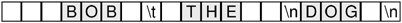

Strings, Byte Arrays, and VariantsQString, QByteArray, and QVariant are three classes that have many things in common with containers and that can be used as alternatives to containers in some contexts. Also, like the containers, these classes use implicit sharing as a memory and speed optimization. We will start with QString. Strings are used by every GUI program, not only for the user interface but often also as data structures. C++ natively provides two kinds of strings: traditional C-style '\0'-terminated character arrays and the std::string class. Unlike these, QString holds 16-bit Unicode values. Unicode contains ASCII and Latin-1 as a subset, with their usual numeric values. But since QString is 16-bit, it can represent thousands of other characters for writing most of the world's languages. See Chapter 17 for more information about Unicode. When using QString, we don't need to worry about such arcane details as allocating enough memory or ensuring that the data is '\0'-terminated. Conceptually, QStrings can be thought of as a vector of QChars. A QString can embed '\0' characters. The length() function returns the size of the entire string, including embedded '\0' characters. QString provides a binary + operator to concatenate two strings and a += operator to append one string to another. Because QString automatically preallocates memory at the end of the string data, building up a string by repeatedly appending characters is very fast. Here's an example that combines + and +=: QString str = "User: "; str += userName + "\n"; There is also a QString::append() function that does the same thing as the += operator:
str = "User: ";
str.append(userName);
str.append("\n");
A completely different way of combining strings is to use QString's sprintf() function:
str.sprintf("%s %.1f%%", "perfect competition", 100.0);
This function supports the same format specifiers as the C++ library's sprintf() function. In the example above, str is assigned "perfect competition 100.0%". Yet another way of building a string from other strings or from numbers is to use arg():
str = QString("%1 %2 (%3s-%4s)")
.arg("permissive").arg("society").arg(1950).arg(1970);
In this example, "%1" is replaced by "permissive", "%2" is replaced by "society", "%3" is replaced by "1950", and "%4" is replaced by "1970". The result is "permissive society (1950s-1970s)". There are arg() overloads to handle various data types. Some overloads have extra parameters for controlling the field width, the numerical base, or the floating-point precision. In general, arg() is a much better solution than sprintf(), because it is type-safe, fully supports Unicode, and allows translators to reorder the "%n" parameters. QString can convert numbers into strings using the QString::number() static function: str = QString::number(59.6); Or using the setNum() function: str.setNum(59.6); The reverse conversion, from a string to a number, is achieved using toInt(), toLongLong(), toDouble(), and so on. For example: bool ok; double d = str.toDouble(&ok); These functions accept an optional pointer to a bool variable and set the variable to TRue or false depending on the success of the conversion. If the conversion fails, these functions return zero. Once we have a string, we often want to extract parts of it. The mid() function returns the substring starting at a given position (the first argument) and of up to a given length (the second argument). For example, the following code prints "pays" to the console:[*]
QString str = "polluter pays principle"; qDebug() << str.mid(9, 4); If we omit the second argument, mid() returns the substring starting at the given position and ending at the end of the string. For example, the following code prints "pays principle" to the console: QString str = "polluter pays principle"; qDebug() << str.mid(9); There are also left() and right() functions that perform a similar job. Both accept a number of characters,n, and return the first or last n characters of the string. For example, the following code prints "polluter principle" to the console: QString str = "polluter pays principle"; qDebug() << str.left(8) << " " << str.right(9); If we want to find out if a string contains a particular character, substring, or regular expression, we can use one of QString's indexOf() functions:
QString str = "the middle bit";
int i = str.indexOf("middle");
This will set i to 4. The indexOf() function returns -1 on failure, and accepts an optional start position and case-sensitivity flag. If we just want to check whether a string starts or ends with something, we can use the startsWith() and endsWith() functions:
if (url.startsWith("http:") && url.endsWith(".png"))
...
This is both simpler and faster than this: if (url.left(5) == "http:" && url.right(4) == ".png") ... String comparison with the == operator is case sensitive. If we are comparing user-visible strings, localeAwareCompare() is usually the right choice, and if we want to make the comparisons case-insensitive, we can use toUpper() or toLower(). For example:
if (fileName.toLower() == "readme.txt")
...
If we want to replace a certain part of a string by another string, we can use replace(): QString str = "a cloudy day"; str.replace(2, 6, "sunny"); The result is "a sunny day". The code can be rewritten to use remove() and insert(): str.remove(2, 6); str.insert(2, "sunny"); First, we remove six characters starting at position 2, resulting in the string "a day" (with two spaces), then we insert "sunny" at position 2. There are overloaded versions of replace() that replace all occurrences of their first argument with their second argument. For example, here's how to replace all occurrences of "&" with "&" in a string:
str.replace("&", "&");
One very frequent need is to strip the whitespace (such as spaces, tabs, and newlines) from a string. QString has a function that eliminates whitespace from both ends of a string: QString str = " BOB \t THE \nDOG \n"; qDebug() << str.trimmed();  The string returned by trimmed() is
When handling user input, we often also want to replace every sequence of one or more internal whitespace characters with single spaces, in addition to stripping whitespace from both ends. This is what the simplified() function does: QString str = " BOB \t THE \nDOG \n"; qDebug() << str.simplified(); The string returned by simplified() is
A string can be split into a QStringList of substrings using QString::split():
QString str = "polluter pays principle";
QStringList words = str.split(" ");
In the example above, we split the string "polluter pays principle" into three substrings: "polluter", "pays", and "principle". The split() function has an optional third argument that specifies whether empty substrings should be kept (the default) or discarded. The items in a QStringList can be joined to form a single string using join(). The argument to join() is inserted between each pair of joined strings. For example, here's how to create a single string that is composed of all the strings contained in a QStringList sorted into alphabetical order and separated by newlines:
words.sort();
str = words.join("\n");
When dealing with strings, we often need to determine whether a string is empty or not. This is done by calling isEmpty() or by checking whether length() is 0. The conversion from const char * strings to QString is automatic in most cases, for example: str += " (1870)"; Here we add a const char * to a QString without formality. To explicitly convert a const char * to a QString, simply use a QString cast, or call fromAscii() or fromLatin1(). (See Chapter 17 for an explanation of handling literal strings in other encodings.) To convert a QString to a const char *, use toAscii() or toLatin1(). These functions return a QByteArray, which can be converted into a const char * using QByteArray::data() or QByteArray::constData(). For example:
printf("User: %s\n", str.toAscii().data());
For convenience, Qt provides the qPrintable() macro that performs the same as the sequence toAscii().constData():
printf("User: %s\n", qPrintable(str));
When we call data() or constData() on a QByteArray, the returned string is owned by the QByteArray object. This means that we don't need to worry about memory leaks; Qt will reclaim the memory for us. On the other hand, we must be careful not to use the pointer for too long. If the QByteArray is not stored in a variable, it will be automatically deleted at the end of the statement. The QByteArray class has a very similar API to QString. Functions like left(), right(), mid(), toLower(), toUpper(), TRimmed(), and simplified() exist in QByteArray with the same semantics as their QString counterparts. QByteArray is useful for storing raw binary data and 8-bit encoded text strings. In general, we recommend using QString for storing text rather than QByteArray because QString supports Unicode. For convenience, QByteArray automatically ensures that the "one past the last" byte is always '\0', making it easy to pass a QByteArray to a function taking a const char *. QByteArray also supports embedded '\0' characters, allowing us to use it to store arbitrary binary data. In some situations, we need to store data of different types in the same variable. One approach is to encode the data as a QByteArray or a QString. For example, a string could hold a textual value or a numeric value in string form. These approaches give complete flexibility, but do away with some of C++'s benefits, in particular type safety and efficiency. Qt provides a much cleaner way of handling variables that can hold different types: QVariant. The QVariant class can hold values of many Qt types, including QBrush, QColor, QCursor, QDateTime, QFont, QKeySequence, QPalette, QPen, QPixmap, QPoint, QRect, QRegion, QSize, and QString, as well as basic C++ numeric types like double and int. The QVariant class can also hold containers: QMap<QString,QVariant>, QStringList, and QList<QVariant>. Variants are used extensively by the item view classes, the database module, and QSettings, allowing us to read and write item data, database data, and user preferences for any QVariant-compatible type. We have already seen an example of this in Chapter 3, where we passed a QRect, a QStringList, and a couple of bools as variants to QSettings::setValue(), and retrieved them later as variants. It is possible to create arbitrarily complex data structures using QVariant by nesting values of container types: QMap<QString, QVariant> pearMap; pearMap["Standard"] = 1.95; pearMap["Organic"] = 2.25; QMap<QString, QVariant> fruitMap; fruitMap["Orange"] = 2.10; fruitMap["Pineapple"] = 3.85; fruitMap["Pear"] = pearMap; Here we have created a map with string keys (product names) and values that are either floating-point numbers (prices) or maps. The top-level map contains three keys: "Orange", "Pear", and "Pineapple". The value associated with the "Pear" key is a map that contains two keys ("Standard" and "Organic"). When iterating over a map that holds variant values, we need to use type() to check the type that a variant holds so that we can respond appropriately. Creating data structures like this can be very seductive since we can organize the data in any way we like. But the convenience of QVariant comes at the expense of efficiency and readability. As a rule, it is usually worth defining a proper C++ class to store our data whenever possible. QVariant is used by Qt's meta-object system and is therefore part of the QtCore module. Nonetheless, when we link against the QtGui module, QVariant can store GUI-related types such as QColor, QFont, QIcon, QImage, and QPixmap:
QIcon icon("open.png");
QVariant variant = icon;
To retrieve the value of a GUI-related type from a QVariant, we can use the QVariant::value<T>() template member function as follows: QIcon icon = variant.value<QIcon>(); The value<T>() function also works for converting between non-GUI data types and QVariant, but in practice we normally use the to...() conversion functions (for example, toString()) for non-GUI types. QVariant can also be used to store custom data types, assuming they provide a default constructor and a copy constructor. For this to work, we must first register the type using the Q_DECLARE_METATYPE() macro, typically in a header file below the class definition:q Q_DECLARE_METATYPE(BusinessCard) This enables us to write code like this:
BusinessCard businessCard;
QVariant variant = QVariant::fromValue(businessCard);
...
if (variant.canConvert<BusinessCard>()) {
BusinessCard card = variant.value<BusinessCard>();
...
}
Because of a compiler limitation, these template member functions are not available for MSVC 6. If you need to use this compiler, use the qVariantFromValue(), qVariantValue<T>(), and qVariantCanConvert<T>() global functions instead. If the custom data type has << and >> operators for writing to and reading from a QDataStream, we can register them using qRegisterMetaTypeStreamOperators<T>(). This makes it possible to store preferences of custom data types using QSettings, among other things. For example:
qRegisterMetaTypeStreamOperators<BusinessCard>("BusinessCard");
This chapter has focused on the Qt containers, as well as on QString, QByteArray, and QVariant. In addition to these classes, Qt also provides a few other containers. One is QPair<T1, T2>, which simply stores two values and is similar to std::pair<T1, T2>. Another is QBitArray, which we will use in the first section of Chapter 19. Finally, there is QVarLengthArray<T,Prealloc>, a low-level alternative to QVector<T>. Because it preallocates memory on the stack and isn't implicitly shared, its overhead is less than that of QVector<T>, making it more appropriate for tight loops. Qt's algorithms, including a few not covered here such as qCopyBackward() and qEqual(), are described in Qt's documentation at http://doc.trolltech.com/4.1/algorithms.html. And for more details of Qt's containers, including information on their time complexity and growth strategies, see http://doc.trolltech.com/4.1/containers.html. |